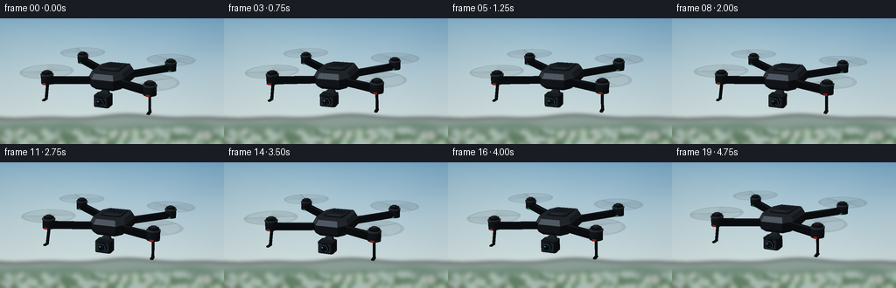
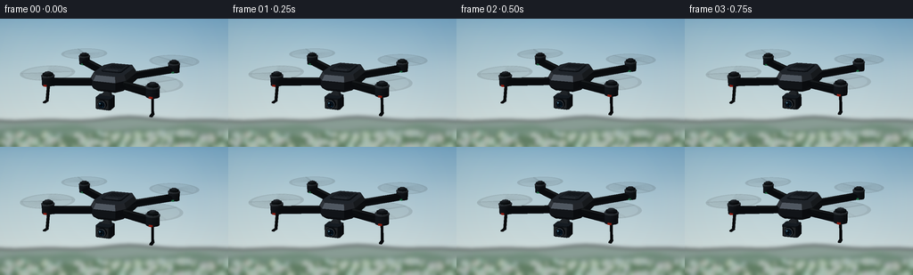

CODING AGENTS AS PIXEL WORLD MODELS
traex/GPT-6.1-Sol · instance_preservation_0041
点击播放 · 原生 RGB 像素
逐轮保存的候选
回放视频、检查图与代码变化。
每份候选均可单独播放。实际图片检查记录在下方工具轨迹中。
候选 01播放与检查图
点击播放 · 原生 RGB 像素


展开代码变化
--- 上一保存版本
+++ 本次保存版本
@@ -0,0 +1,208 @@
+from pathlib import Path
+import math,json
+import numpy as np
+from PIL import Image,ImageDraw,ImageFilter
+import artifact_io
+
+ROOT=Path(__file__).resolve().parent
+SPEC=json.loads((ROOT/'task_spec.json').read_text())
+W,H=SPEC['width'],SPEC['height']
+S=3; RW,RH=W*S,H*S
+rng=np.random.default_rng(41)
+
+def background():
+ yy,xx=np.mgrid[0:RH,0:RW]; y=yy/RH; x=xx/RW
+ col=np.zeros((RH,RW,3),float)
+ for c,(top,bot) in enumerate(zip((113,162,194),(221,229,224))): col[:,:,c]=top+(bot-top)*y**.8
+ haze=np.exp(-((x-.15)**2/.30+(y-.13)**2/.38))
+ col+=haze[:,:,None]*np.array([17,12,5])
+ noise=rng.random((22,40))*255
+ n=np.asarray(Image.fromarray(noise.astype('uint8')).resize((RW,RH),Image.Resampling.BICUBIC).filter(ImageFilter.GaussianBlur(15*S)))/255
+ clouds=np.clip((n-.42)*2.1,0,.6)*np.exp(-((y-.36)/.30)**2)
+ col=col*(1-clouds[:,:,None]*.30)+np.array([243,245,238])*clouds[:,:,None]*.30
+ img=Image.fromarray(np.uint8(np.clip(col,0,255)))
+ land=Image.new('RGBA',(RW,RH));d=ImageDraw.Draw(land)
+ def hill(level,amp,freq,color,phase):
+ pts=[]
+ for a in range(-5,RW+6,3):
+ u=a/RW
+ v=level+amp*(.60*math.sin(freq*u+phase)+.35*math.sin(freq*2.2*u+phase+1))
+ pts.append((a,v*RH))
+ d.polygon(pts+[(RW,RH),(0,RH)],fill=color)
+ hill(.788,.021,8,(137,157,149,255),.1)
+ hill(.851,.029,11,(115,143,126,255),2)
+ hill(.908,.024,9,(99,128,102,255),.7)
+ # Distant unfocused vegetation and pasture, beneath the hovering drone.
+ for k in range(220):
+ a=rng.uniform(0,RW); b=rng.uniform(.88,1.04)*RH
+ r=rng.uniform(1,5)*S
+ d.ellipse((a-r,b-r*.65,a+r,b+r),fill=(int(rng.integers(81,109)),int(rng.integers(113,139)),int(rng.integers(87,112)),95))
+ land=land.filter(ImageFilter.GaussianBlur(2.3*S));img=Image.alpha_composite(img.convert('RGBA'),land).convert('RGB')
+ arr=np.asarray(img,dtype=float)
+ vignette=1-.055*((x-.5)**2*2+(y-.5)**2)
+ return arr*vignette[:,:,None]
+BG=background()
+
+# Small software triangle rasterizer: all shapes and illumination are computed here.
+CAM=np.array([4.0,2.75,8.8]); forward=-CAM/np.linalg.norm(CAM)
+right=np.cross(forward,np.array([0.,1.,0.])); right/=np.linalg.norm(right)
+up=np.cross(right,forward)
+light=np.array([-3.,7.,5.]);light/=np.linalg.norm(light)
+mesh=[]; transparent=[]
+
+def face(v,color,norm=None,alpha=1,spec=.0):
+ v=np.asarray(v,float)
+ if norm is None:
+ n=np.cross(v[1]-v[0],v[2]-v[0]);n/=max(np.linalg.norm(n),1e-9); norm=np.tile(n,(len(v),1))
+ else: norm=np.asarray(norm,float)
+ dest=mesh if alpha==1 else transparent
+ for i in range(1,len(v)-1):dest.append((v[[0,i,i+1]],norm[[0,i,i+1]],np.array(color,float),alpha,spec))
+
+def box(a,b,color,bevel=0):
+ a=np.array(a);b=np.array(b)
+ if bevel:
+ # Beveled octagonal extrusion, used for camera housings and the battery.
+ x0,y0,z0=a;x1,y1,z1=b;r=bevel
+ ring=[(x0+r,z0),(x1-r,z0),(x1,z0+r),(x1,z1-r),(x1-r,z1),(x0+r,z1),(x0,z1-r),(x0,z0+r)]
+ p0=[(x,y0,z) for x,z in ring];p1=[(x,y1,z) for x,z in ring]
+ face(p1[::-1],color);face(p0,color)
+ for k in range(8): j=(k+1)%8;face([p0[k],p1[k],p1[j],p0[j]],color)
+ else:
+ x0,y0,z0=a;x1,y1,z1=b
+ for q in [[(x0,y1,z0),(x0,y1,z1),(x1,y1,z1),(x1,y1,z0)],[(x0,y0,z1),(x0,y0,z0),(x1,y0,z0),(x1,y0,z1)],[(x1,y0,z0),(x1,y1,z0),(x1,y1,z1),(x1,y0,z1)],[(x0,y0,z1),(x0,y1,z1),(x0,y1,z0),(x0,y0,z0)],[(x1,y0,z1),(x1,y1,z1),(x0,y1,z1),(x0,y0,z1)],[(x0,y0,z0),(x0,y1,z0),(x1,y1,z0),(x1,y0,z0)]]:face(q,color,spec=.15)
+
+def cylinder(c,r,length,color,axis='y',n=32,spec=.2):
+ c=np.array(c,float)
+ if axis=='y':u=np.array([1.,0,0]);v=np.array([0,0,-1.]);w=np.array([0,1.,0])
+ else:u=np.array([1.,0,0]);v=np.array([0,1.,0]);w=np.array([0,0,1.])
+ theta=np.arange(n)*2*np.pi/n
+ ns=np.cos(theta)[:,None]*u+np.sin(theta)[:,None]*v
+ lo=c-length/2*w+r*ns;hi=c+length/2*w+r*ns
+ for k in range(n):j=(k+1)%n;face([lo[k],lo[j],hi[j],hi[k]],color,[ns[k],ns[j],ns[j],ns[k]],spec=spec)
+ face(hi,color,np.tile(w,(n,1)),spec=spec);face(lo[::-1],color,np.tile(-w,(n,1)),spec=spec)
+
+def beam(a,b,width,height,color):
+ a=np.array(a,float);b=np.array(b,float);direction=b-a;direction/=np.linalg.norm(direction)
+ cross=np.cross(direction,[0,1,0]);cross/=np.linalg.norm(cross);vertical=np.cross(cross,direction)
+ # Eight-point chamfered section keeps the arms angular but catches rim light.
+ ring=[(-.5,-.32),(-.34,-.5),(.34,-.5),(.5,-.32),(.5,.32),(.34,.5),(-.34,.5),(-.5,.32)]
+ rings=[np.array([p+cross*x*width+vertical*y*height for x,y in ring]) for p in [a,b]]
+ face(rings[0][::-1],color);face(rings[1],color)
+ for k in range(8):j=(k+1)%8;face([rings[0][k],rings[0][j],rings[1][j],rings[1][k]],color,spec=.25)
+
+def drone(t):
+ mesh.clear();transparent.clear()
+ # Compact charcoal-black shell, continuous chamfered contour.
+ outline=np.array([[-.31,-.67],[.31,-.67],[.46,-.38],[.44,.40],[.27,.65],[-.27,.65],[-.44,.40],[-.46,-.38]])
+ rings=[]
+ for scale,y in [(.79,-.19),(1.,-.09),(1.,.09),(.87,.21)]: rings.append(np.array([(x*scale,y,z*scale) for x,z in outline]))
+ face(rings[0],(9,12,16))
+ for i in range(3):
+ for k in range(8):j=(k+1)%8;face([rings[i][k],rings[i+1][k],rings[i+1][j],rings[i][j]],(20,23,28) if i<2 else (39,43,48),spec=.38)
+ face(rings[-1][::-1],(27,31,36),spec=.28)
+ # Battery lid and fine panel seam.
+ box((-.257,.210,-.46),(.257,.226,.245),(13,17,21),.06)
+ box((-.23,.227,-.435),(.23,.233,.218),(24,28,33),.045)
+ for z in np.arange(-.35,-.04,.047):box((-.184,.235,z),(.184,.238,z+.010),(9,12,15))
+ box((-.16,.237,.135),(.16,.242,.166),(48,53,58),.008)
+ for sx in [-1,1]:
+ for sz in [-1,1]:
+ cx=sx*1.24;cz=sz*1.01
+ beam((sx*.32,-.015,sz*.37),(cx,.075,cz),.235,.15,(17,21,26))
+ beam((sx*.43,.075,sz*.46),(cx*.95,.128,cz*.95),.080,.025,(42,47,51))
+ cylinder((cx,.115,cz),.145,.22,(18,22,27),n=28,spec=.32)
+ cylinder((cx,.217,cz),.153,.03,(43,48,53),n=28,spec=.5)
+ cylinder((cx,.248,cz),.119,.055,(13,17,20),n=28,spec=.25)
+ cylinder((cx,.290,cz),.070,.033,(30,34,38),n=24,spec=.35)
+ # Short angled landing feet beneath the front motor struts.
+ if sz==1:
+ beam((cx,-.025,cz),(cx+sx*.025,-.37,cz+.055),.055,.061,(16,20,23))
+ beam((cx+sx*.025,-.37,cz+.04),(cx+sx*.025,-.37,cz+.19),.07,.04,(22,25,28))
+ # Tiny nav lights embedded in the arm, not decorative highlights.
+ box((cx-.043,.004,cz+.145),(cx+.043,.045,cz+.16),(155,33,21) if sz==1 else (31,115,71),.007)
+ # Rotor motion blur is represented by a translucent swept disk and multiple exposure blades.
+ rr=.625;cy=.295;n=64
+ for k in range(n):
+ a=k*2*np.pi/n;b=(k+1)*2*np.pi/n
+ face([(cx,cy,cz),(cx+rr*np.cos(a),cy,cz+rr*np.sin(a)),(cx+rr*np.cos(b),cy,cz+rr*np.sin(b))],(45,49,50),alpha=.070)
+ ri=rr*.88
+ face([(cx+ri*np.cos(a),cy,cz+ri*np.sin(a)),(cx+rr*np.cos(a),cy,cz+rr*np.sin(a)),(cx+rr*np.cos(b),cy,cz+rr*np.sin(b)),(cx+ri*np.cos(b),cy,cz+ri*np.sin(b))],(67,72,73),alpha=.065)
+ phase=t*37.7+sx*1.4+sz*.9
+ for k in range(9):
+ a=phase-k*.18
+ for sign in [-1,1]:
+ poly=[]
+ for rad,off in [(.075,-.038),(.48,-.040),(.61,-.014),(.625,.012),(.51,.038),(.12,.027)]:
+ rad*=sign;off*=sign
+ poly.append((cx+rad*np.cos(a)-off*np.sin(a),cy+.003,cz+rad*np.sin(a)+off*np.cos(a)))
+ face(poly,(23,27,31),alpha=.10 if k==0 else .035)
+ # Front binocular proximity sensors recessed into the shell.
+ for x in [-.205,.205]:
+ cylinder((x,-.003,.603),.054,.025,(6,8,10),axis='z',n=20)
+ cylinder((x,-.003,.620),.032,.014,(20,30,38),axis='z',n=20,spec=.65)
+ # Suspended gimbal and compact square camera with circular coated lens.
+ beam((0,-.15,.39),(0,-.33,.48),.12,.12,(27,31,35))
+ cylinder((0,-.285,.49),.11,.13,(36,41,45),axis='z',n=24)
+ box((-.188,-.545,.43),(.188,-.272,.76),(18,22,27),.038)
+ box((-.152,-.510,.748),(.152,-.302,.775),(39,43,46),.016)
+ cylinder((0,-.401,.793),.112,.06,(9,11,14),axis='z',n=48,spec=.45)
+ cylinder((0,-.401,.827),.097,.010,(65,72,77),axis='z',n=48,spec=.8)
+ cylinder((0,-.401,.835),.082,.010,(4,12,22),axis='z',n=48,spec=.65)
+ cylinder((0,-.401,.842),.055,.006,(7,26,39),axis='z',n=32,spec=.5)
+ cylinder((0,-.401,.847),.032,.004,(4,8,13),axis='z',n=32,spec=.4)
+ # Two tiny glass reflections, kept asymmetrical.
+ cylinder((-.031,-.368,.852),.018,.002,(91,141,163),axis='z',n=16,spec=.2)
+ cylinder((.039,-.439,.852),.010,.002,(34,84,111),axis='z',n=12,spec=.1)
+
+
+def render(t):
+ drone(t)
+ yaw=.07+ .052*math.sin(t*.85)
+ roll=.016*math.sin(t*1.85);pitch=.017*math.cos(t*1.45)
+ cy,sy=math.cos(yaw),math.sin(yaw);cr,sr=math.cos(roll),math.sin(roll);cp,sp=math.cos(pitch),math.sin(pitch)
+ rot=np.array([[cy,0,sy],[0,1,0],[-sy,0,cy]])@np.array([[cr,-sr,0],[sr,cr,0],[0,0,1]])@np.array([[1,0,0],[0,cp,-sp],[0,sp,cp]])
+ offset=np.array([.043*math.sin(t*.9),.044*math.sin(t*1.55)+.014*math.cos(t*2.5),0])
+ canvas=BG.copy();depth=np.full((RH,RW),np.inf)
+ focal=465*S
+ def prep(item):
+ vs,ns,color,alpha,spec=item;v=vs@rot.T+offset;n=ns@rot.T
+ dv=v-CAM;z=dv@forward
+ p=np.stack([RW*.50+focal*(dv@right)/z,RH*.468-focal*(dv@up)/z],axis=1)
+ # Soft sky light and a broad metallic sun reflection.
+ diffuse=np.maximum(n@light,0)
+ view=CAM-v;view/=np.linalg.norm(view,axis=1)[:,None]
+ halfv=view+light;halfv/=np.linalg.norm(halfv,axis=1)[:,None]
+ shine=np.maximum(np.sum(n*halfv,axis=1),0)**30
+ illumination=.54+.66*diffuse
+ cols=color[None,:]*illumination[:,None]+spec*shine[:,None]*np.array([94,101,109])
+ cols+=np.maximum(n[:,1],0)[:,None]*np.array([3,4,5])
+ return p,z,cols,alpha
+ def raster(p,z,col,alpha):
+ xmin=max(0,int(np.floor(p[:,0].min())));xmax=min(RW-1,int(np.ceil(p[:,0].max())))
+ ymin=max(0,int(np.floor(p[:,1].min())));ymax=min(RH-1,int(np.ceil(p[:,1].max())))
+ if xmin>xmax or ymin>ymax:return
+ x0,y0=p[0];x1,y1=p[1];x2,y2=p[2]
+ denom=(y1-y2)*(x0-x2)+(x2-x1)*(y0-y2)
+ if abs(denom)<1e-7:return
+ Y,X=np.mgrid[ymin:ymax+1,xmin:xmax+1];X=X+.5;Y=Y+.5
+ a=((y1-y2)*(X-x2)+(x2-x1)*(Y-y2))/denom
+ b=((y2-y0)*(X-x2)+(x0-x2)*(Y-y2))/denom;c=1-a-b
+ zz=1/(a/z[0]+b/z[1]+c/z[2])
+ dep=depth[ymin:ymax+1,xmin:xmax+1]
+ inside=(a>=-1e-7)&(b>=-1e-7)&(c>=-1e-7)&(zz<dep+1e-6)
+ if not np.any(inside):return
+ colors=(a[:,:,None]*col[0]/z[0]+b[:,:,None]*col[1]/z[1]+c[:,:,None]*col[2]/z[2])*zz[:,:,None]
+ reg=canvas[ymin:ymax+1,xmin:xmax+1]
+ if alpha==1:
+ reg[inside]=colors[inside];dep[inside]=zz[inside]
+ else:reg[inside]=reg[inside]*(1-alpha)+colors[inside]*alpha
+ for item in mesh:raster(*prep(item))
+ transluc=[prep(item) for item in transparent];transluc.sort(key=lambda q:-np.mean(q[1]))
+ for item in transluc:raster(*item)
+ img=Image.fromarray(np.uint8(np.clip(canvas,0,255))).resize((W,H),Image.Resampling.LANCZOS)
+ return np.asarray(img)
+
+if __name__=='__main__':
+ frames=np.stack([render(i/SPEC['fps']) for i in range(SPEC['frames'])])
+ artifact_io.save(frames,ROOT)
+ print('Saved',frames.shape,frames.dtype,'to',ROOT)
可观测工具轨迹
实际执行的命令与返回图片。
命令 1exit 0
/bin/bash -lc "ls -la && cat prompt.txt && printf '\\n---RULES---\\n' && cat GENERATION_RULES.md && printf '\\n---SPEC---\\n' && cat task_spec.json"
命令 2exit 0
/bin/bash -lc 'cat artifact_io.py && cat player_template.html'
命令 3exit 0
/bin/bash -lc "cat > generate.py <<'PY'
from pathlib import Path
import math,json
import numpy as np
from PIL import Image,ImageDraw,ImageFilter
import artifact_io
ROOT=Path(__file__).resolve().parent
SPEC=json.loads((ROOT/'task_spec.json').read_text())
W,H=SPEC['width'],SPEC['height']
S=3; RW,RH=W*S,H*S
rng=np.random.default_rng(41)
def background():
yy,xx=np.mgrid[0:RH,0:RW]; y=yy/RH; x=xx/RW
col=np.zeros((RH,RW,3),float)
for c,(top,bot) in enumerate(zip((113,162,194),(221,229,224))): col[:,:,c]=top+(bot-top)*y**.8
haze=np.exp(-((x-.15)**2/.30+(y-.13)**2/.38))
col+=haze[:,:,None]*np.array([17,12,5])
noise=rng.random((22,40))*255
n=np.asarray(Image.fromarray(noise.astype('uint8')).resize((RW,RH),Image.Resampling.BICUBIC).filter(ImageFilter.GaussianBlur(15*S)))/255
clouds=np.clip((n-.42)*2.1,0,.6)*np.exp(-((y-.36)/.30)**2)
col=col*(1-clouds[:,:,None]*.30)+np.array([243,245,238])*clouds[:,:,None]*.30
img=Image.fromarray(np.uint8(np.clip(col,0,255)))
land=Image.new('RGBA',(RW,RH));d=ImageDraw.Draw(land)
def hill(level,amp,freq,color,phase):
pts=[]
for a in range(-5,RW+6,3):
u=a/RW
v=level+amp*(.60*math.sin(freq*u+phase)+.35*math.sin(freq*2.2*u+phase+1))
pts.append((a,v*RH))
d.polygon(pts+[(RW,RH),(0,RH)],fill=color)
hill(.788,.021,8,(137,157,149,255),.1)
hill(.851,.029,11,(115,143,126,255),2)
hill(.908,.024,9,(99,128,102,255),.7)
# Distant unfocused vegetation and pasture, beneath the hovering drone.
for k in range(220):
a=rng.uniform(0,RW); b=rng.uniform(.88,1.04)*RH
r=rng.uniform(1,5)*S
d.ellipse((a-r,b-r*.65,a+r,b+r),fill=(int(rng.integers(81,109)),int(rng.integers(113,139)),int(rng.integers(87,112)),95))
land=land.filter(ImageFilter.GaussianBlur(2.3*S));img=Image.alpha_composite(img.convert('RGBA'),land).convert('RGB')
arr=np.asarray(img,dtype=float)
vignette=1-.055*((x-.5)**2*2+(y-.5)**2)
return arr*vignette[:,:,None]
BG=background()
# Small software triangle rasterizer: all shapes and illumination are computed here.
CAM=np.array([4.0,2.75,8.8]); forward=-CAM/np.linalg.norm(CAM)
right=np.cross(forward,np.array([0.,1.,0.])); right/=np.linalg.norm(right)
up=np.cross(right,forward)
light=np.array([-3.,7.,5.]);light/=np.linalg.norm(light)
mesh=[]; transparent=[]
def face(v,color,norm=None,alpha=1,spec=.0):
v=np.asarray(v,float)
if norm is None:
n=np.cross(v[1]-v[0],v[2]-v[0]);n/=max(np.linalg.norm(n),1e-9); norm=np.tile(n,(len(v),1))
else: norm=np.asarray(norm,float)
dest=mesh if alpha==1 else transparent
for i in range(1,len(v)-1):dest.append((v[[0,i,i+1]],norm[[0,i,i+1]],np.array(color,float),alpha,spec))
def box(a,b,color,bevel=0):
a=np.array(a);b=np.array(b)
if bevel:
# Beveled octagonal extrusion, used for camera housings and the battery.
x0,y0,z0=a;x1,y1,z1=b;r=bevel
ring=[(x0+r,z0),(x1-r,z0),(x1,z0+r),(x1,z1-r),(x1-r,z1),(x0+r,z1),(x0,z1-r),(x0,z0+r)]
p0=[(x,y0,z) for x,z in ring];p1=[(x,y1,z) for x,z in ring]
face(p1[::-1],color);face(p0,color)
for k in range(8): j=(k+1)%8;face([p0[k],p1[k],p1[j],p0[j]],color)
else:
x0,y0,z0=a;x1,y1,z1=b
for q in [[(x0,y1,z0),(x0,y1,z1),(x1,y1,z1),(x1,y1,z0)],[(x0,y0,z1),(x0,y0,z0),(x1,y0,z0),(x1,y0,z1)],[(x1,y0,z0),(x1,y1,z0),(x1,y1,z1),(x1,y0,z1)],[(x0,y0,z1),(x0,y1,z1),(x0,y1,z0),(x0,y0,z0)],[(x1,y0,z1),(x1,y1,z1),(x0,y1,z1),(x0,y0,z1)],[(x0,y0,z0),(x0,y1,z0),(x1,y1,z0),(x1,y0,z0)]]:face(q,color,spec=.15)
def cylinder(c,r,length,color,axis='y',n=32,spec=.2):
c=np.array(c,float)
if axis=='y':u=np.array([1.,0,0]);v=np.array([0,0,-1.]);w=np.array([0,1.,0])
else:u=np.array([1.,0,0]);v=np.array([0,1.,0]);w=np.array([0,0,1.])
theta=np.arange(n)*2*np.pi/n
ns=np.cos(theta)[:,None]*u+np.sin(theta)[:,None]*v
lo=c-length/2*w+r*ns;hi=c+length/2*w+r*ns
for k in range(n):j=(k+1)%n;face([lo[k],lo[j],hi[j],hi[k]],color,[ns[k],ns[j],ns[j],ns[k]],spec=spec)
face(hi,color,np.tile(w,(n,1)),spec=spec);face(lo[::-1],color,np.tile(-w,(n,1)),spec=spec)
def beam(a,b,width,height,color):
a=np.array(a,float);b=np.array(b,float);direction=b-a;direction/=np.linalg.norm(direction)
cross=np.cross(direction,[0,1,0]);cross/=np.linalg.norm(cross);vertical=np.cross(cross,direction)
# Eight-point chamfered section keeps the arms angular but catches rim light.
ring=[(-.5,-.32),(-.34,-.5),(.34,-.5),(.5,-.32),(.5,.32),(.34,.5),(-.34,.5),(-.5,.32)]
rings=[np.array([p+cross*x*width+vertical*y*height for x,y in ring]) for p in [a,b]]
face(rings[0][::-1],color);face(rings[1],color)
for k in range(8):j=(k+1)%8;face([rings[0][k],rings[0][j],rings[1][j],rings[1][k]],color,spec=.25)
def drone(t):
mesh.clear();transparent.clear()
# Compact charcoal-black shell, continuous chamfered contour.
outline=np.array([[-.31,-.67],[.31,-.67],[.46,-.38],[.44,.40],[.27,.65],[-.27,.65],[-.44,.40],[-.46,-.38]])
rings=[]
for scale,y in [(.79,-.19),(1.,-.09),(1.,.09),(.87,.21)]: rings.append(np.array([(x*scale,y,z*scale) for x,z in outline]))
face(rings[0],(9,12,16))
for i in range(3):
for k in range(8):j=(k+1)%8;face([rings[i][k],rings[i+1][k],rings[i+1][j],rings[i][j]],(20,23,28) if i<2 else (39,43,48),spec=.38)
face(rings[-1][::-1],(27,31,36),spec=.28)
# Battery lid and fine panel seam.
box((-.257,.210,-.46),(.257,.226,.245),(13,17,21),.06)
box((-.23,.227,-.435),(.23,.233,.218),(24,28,33),.045)
for z in np.arange(-.35,-.04,.047):box((-.184,.235,z),(.184,.238,z+.010),(9,12,15))
box((-.16,.237,.135),(.16,.242,.166),(48,53,58),.008)
for sx in [-1,1]:
for sz in [-1,1]:
cx=sx*1.24;cz=sz*1.01
beam((sx*.32,-.015,sz*.37),(cx,.075,cz),.235,.15,(17,21,26))
beam((sx*.43,.075,sz*.46),(cx*.95,.128,cz*.95),.080,.025,(42,47,51))
cylinder((cx,.115,cz),.145,.22,(18,22,27),n=28,spec=.32)
cylinder((cx,.217,cz),.153,.03,(43,48,53),n=28,spec=.5)
cylinder((cx,.248,cz),.119,.055,(13,17,20),n=28,spec=.25)
cylinder((cx,.290,cz),.070,.033,(30,34,38),n=24,spec=.35)
# Short angled landing feet beneath the front motor struts.
if sz==1:
beam((cx,-.025,cz),(cx+sx*.025,-.37,cz+.055),.055,.061,(16,20,23))
beam((cx+sx*.025,-.37,cz+.04),(cx+sx*.025,-.37,cz+.19),.07,.04,(22,25,28))
# Tiny nav lights embedded in the arm, not decorative highlights.
box((cx-.043,.004,cz+.145),(cx+.043,.045,cz+.16),(155,33,21) if sz==1 else (31,115,71),.007)
# Rotor motion blur is represented by a translucent swept disk and multiple exposure blades.
rr=.625;cy=.295;n=64
for k in range(n):
a=k*2*np.pi/n;b=(k+1)*2*np.pi/n
face([(cx,cy,cz),(cx+rr*np.cos(a),cy,cz+rr*np.sin(a)),(cx+rr*np.cos(b),cy,cz+rr*np.sin(b))],(45,49,50),alpha=.070)
ri=rr*.88
face([(cx+ri*np.cos(a),cy,cz+ri*np.sin(a)),(cx+rr*np.cos(a),cy,cz+rr*np.sin(a)),(cx+rr*np.cos(b),cy,cz+rr*np.sin(b)),(cx+ri*np.cos(b),cy,cz+ri*np.sin(b))],(67,72,73),alpha=.065)
phase=t*37.7+sx*1.4+sz*.9
for k in range(9):
a=phase-k*.18
for sign in [-1,1]:
poly=[]
for rad,off in [(.075,-.038),(.48,-.040),(.61,-.014),(.625,.012),(.51,.038),(.12,.027)]:
rad*=sign;off*=sign
poly.append((cx+rad*np.cos(a)-off*np.sin(a),cy+.003,cz+rad*np.sin(a)+off*np.cos(a)))
face(poly,(23,27,31),alpha=.10 if k==0 else .035)
# Front binocular proximity sensors recessed into the shell.
for x in [-.205,.205]:
cylinder((x,-.003,.603),.054,.025,(6,8,10),axis='z',n=20)
cylinder((x,-.003,.620),.032,.014,(20,30,38),axis='z',n=20,spec=.65)
# Suspended gimbal and compact square camera with circular coated lens.
beam((0,-.15,.39),(0,-.33,.48),.12,.12,(27,31,35))
cylinder((0,-.285,.49),.11,.13,(36,41,45),axis='z',n=24)
box((-.188,-.545,.43),(.188,-.272,.76),(18,22,27),.038)
box((-.152,-.510,.748),(.152,-.302,.775),(39,43,46),.016)
cylinder((0,-.401,.793),.112,.06,(9,11,14),axis='z',n=48,spec=.45)
cylinder((0,-.401,.827),.097,.010,(65,72,77),axis='z',n=48,spec=.8)
cylinder((0,-.401,.835),.082,.010,(4,12,22),axis='z',n=48,spec=.65)
cylinder((0,-.401,.842),.055,.006,(7,26,39),axis='z',n=32,spec=.5)
cylinder((0,-.401,.847),.032,.004,(4,8,13),axis='z',n=32,spec=.4)
# Two tiny glass reflections, kept asymmetrical.
cylinder((-.031,-.368,.852),.018,.002,(91,141,163),axis='z',n=16,spec=.2)
cylinder((.039,-.439,.852),.010,.002,(34,84,111),axis='z',n=12,spec=.1)
def render(t):
drone(t)
yaw=.07+ .052*math.sin(t*.85)
roll=.016*math.sin(t*1.85);pitch=.017*math.cos(t*1.45)
cy,sy=math.cos(yaw),math.sin(yaw);cr,sr=math.cos(roll),math.sin(roll);cp,sp=math.cos(pitch),math.sin(pitch)
rot=np.array([[cy,0,sy],[0,1,0],[-sy,0,cy]])@np.array([[cr,-sr,0],[sr,cr,0],[0,0,1]])@np.array([[1,0,0],[0,cp,-sp],[0,sp,cp]])
offset=np.array([.043*math.sin(t*.9),.044*math.sin(t*1.55)+.014*math.cos(t*2.5),0])
canvas=BG.copy();depth=np.full((RH,RW),np.inf)
focal=465*S
def prep(item):
vs,ns,color,alpha,spec=item;v=vs@rot.T+offset;n=ns@rot.T
dv=v-CAM;z=dv@forward
p=np.stack([RW*.50+focal*(dv@right)/z,RH*.468-focal*(dv@up)/z],axis=1)
# Soft sky light and a broad metallic sun reflection.
diffuse=np.maximum(n@light,0)
view=CAM-v;view/=np.linalg.norm(view,axis=1)[:,None]
halfv=view+light;halfv/=np.linalg.norm(halfv,axis=1)[:,None]
shine=np.maximum(np.sum(n*halfv,axis=1),0)**30
illumination=.54+.66*diffuse
cols=color[None,:]*illumination[:,None]+spec*shine[:,None]*np.array([94,101,109])
cols+=np.maximum(n[:,1],0)[:,None]*np.array([3,4,5])
return p,z,cols,alpha
def raster(p,z,col,alpha):
xmin=max(0,int(np.floor(p[:,0].min())));xmax=min(RW-1,int(np.ceil(p[:,0].max())))
ymin=max(0,int(np.floor(p[:,1].min())));ymax=min(RH-1,int(np.ceil(p[:,1].max())))
if xmin>xmax or ymin>ymax:return
x0,y0=p[0];x1,y1=p[1];x2,y2=p[2]
denom=(y1-y2)*(x0-x2)+(x2-x1)*(y0-y2)
if abs(denom)<1e-7:return
Y,X=np.mgrid[ymin:ymax+1,xmin:xmax+1];X=X+.5;Y=Y+.5
a=((y1-y2)*(X-x2)+(x2-x1)*(Y-y2))/denom
b=((y2-y0)*(X-x2)+(x0-x2)*(Y-y2))/denom;c=1-a-b
zz=1/(a/z[0]+b/z[1]+c/z[2])
dep=depth[ymin:ymax+1,xmin:xmax+1]
inside=(a>=-1e-7)&(b>=-1e-7)&(c>=-1e-7)&(zz<dep+1e-6)
if not np.any(inside):return
colors=(a[:,:,None]*col[0]/z[0]+b[:,:,None]*col[1]/z[1]+c[:,:,None]*col[2]/z[2])*zz[:,:,None]
reg=canvas[ymin:ymax+1,xmin:xmax+1]
if alpha==1:
reg[inside]=colors[inside];dep[inside]=zz[inside]
else:reg[inside]=reg[inside]*(1-alpha)+colors[inside]*alpha
for item in mesh:raster(*prep(item))
transluc=[prep(item) for item in transparent];transluc.sort(key=lambda q:-np.mean(q[1]))
for item in transluc:raster(*item)
img=Image.fromarray(np.uint8(np.clip(canvas,0,255))).resize((W,H),Image.Resampling.LANCZOS)
return np.asarray(img)
if __name__=='__main__':
frames=np.stack([render(i/SPEC['fps']) for i in range(SPEC['frames'])])
artifact_io.save(frames,ROOT)
print('Saved',frames.shape,frames.dtype,'to',ROOT)
PY
python generate.py"命令 4exit 0
/bin/bash -lc "python - <<'PY'
import numpy as np
from pathlib import Path
from PIL import Image
p=Path('.')
z=np.load('pixels.npz')['pixels']
assert z.shape==(144,256,20)
assert len(list((p/'frames').glob('*.png')))==20
for name in ['index.html','inspection.png','transition_check.png','generate.py']:
assert (p/name).is_file()
a=np.stack([np.asarray(Image.open(p/'frames'/f'{i:02d}.png')) for i in range(20)])
print('Verified 20 RGB frames at 256Ã144, 4 fps; range:',a.min(),a.max())
print('Average adjacent-frame pixel change:',np.abs(np.diff(a.astype(float),axis=0)).mean())
print('Subject dark-pixel bounds frame 0:',np.argwhere((a[0].mean(2)<60)).min(0),np.argwhere((a[0].mean(2)<60)).max(0))
PY"保存候选 1 份；完成命令 4 次；可验证图片返回 0 张。原始 API 响应与完整日志保留在本地。